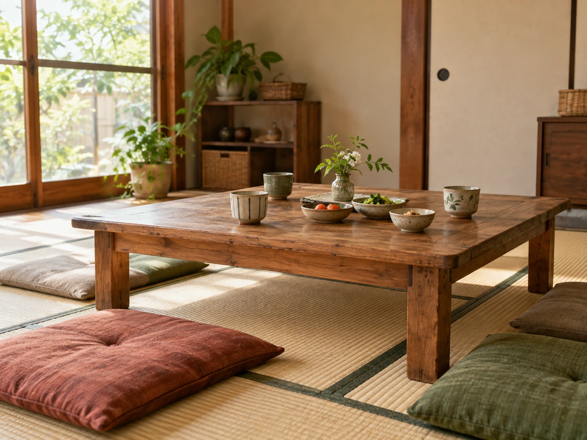

CONCEPT
畳屋だった部屋で、
家のごはんを
cafe とまとの店は、自宅を改装した隠れ家のようなカフェです。 お店になっている部屋は、もともとご主人が畳屋の仕事場として使っていた部屋。 その畳の空間を残すため、カフェなのに和室があります。
Tomato no Mise
店名のとおり、トマトを使った料理が看板です。来店された方は「トマト好きにはたまらないお店」と書かれていました。
お店では、麹（こうじ）を使ったワークショップも開かれています。10月の案内には、こんな言葉が並んでいました。
毎日のごはんを、もっと手軽に、もっと楽しく 公式Instagram（2026年10月3日）より
ワークショップの名前は「家族の元気を育てる ミネラル麹ごはん」。 食べに来る場所であり、家のごはんのヒントを持ち帰る場所でもあるお店です。
